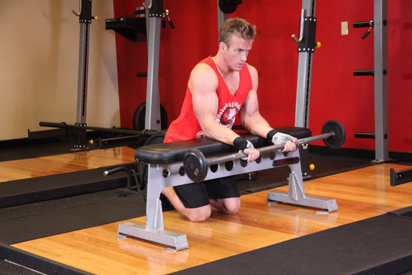
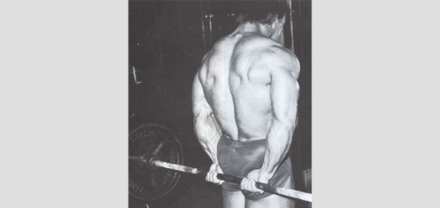
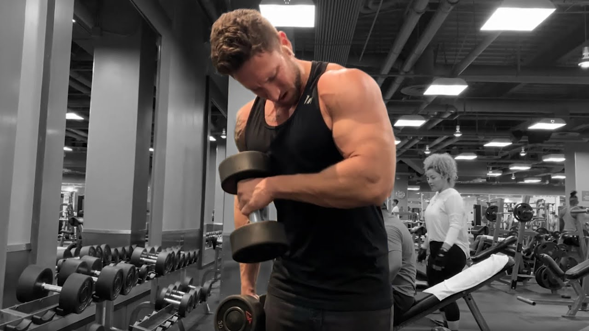
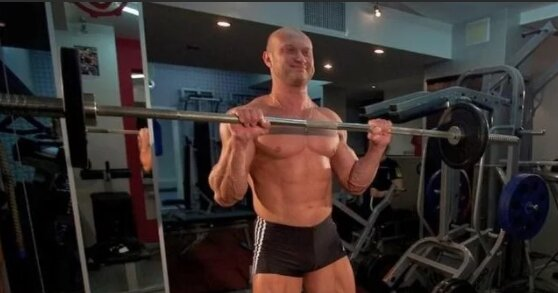

ArmWrestling Training
The first thing you should do in the gym is not to develop your endurance or form a beautiful relief, but to strengthen your arms. You will need exercises for biceps, triceps, broad back muscles and deltoids.
Here are the exercises you can use to strengthen your arms for arm wrestling:

Wrist flexion with barbell
Barbell curls strengthen forearm flexors and improve grip strength. Sit on a bench with your forearms on your thighs and your wrists hanging over the edge. Grab the barbell with a bottom grip and slowly raise it up, bending only your hands, then lower it back down. Keep your forearms still and control the movement. Do not overload the weight and perform the exercise smoothly.

Bending your wrists behind your back
Bending your wrists behind your back with a barbell strengthens your forearm flexors. Stand up straight, grab the barbell with the overhead grip, holding it behind your back. Bend your wrists as you lift the bar up, then slowly return it to the starting position. Keep your back straight and control the movement.

Hammer arm bends
Hammer curls strengthen both biceps and forearms. Stand up straight with a neutral grip dumbbell in each hand (fingers facing each other). Bend your arms at the elbows, raising the dumbbells to your shoulders, then slowly lower them back down. Keep your elbows still and control the movement.
